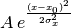

beams package¶
Submodules¶
beams.beams module¶
Module containing the fundamental beam class with methods to compute beam statistics
| Authors: | Kevin Li, Danilo Quartullo, Helga Timko, ALexandre Lasheen |
|---|
- class beams.beams.Beam(General_parameters, n_macroparticles, intensity)¶
Bases: object
- beta_r = None¶
Relativistic beta of the synchronous particle
- delta¶
- energy = None¶
Energy of the synchronous particle [eV]
- gamma_r = None¶
Relativistic gamma of the synchronous particle
- longit_statistics()¶
- losses_longitudinal_cut(theta_min, theta_max)¶
- losses_separatrix(GeneralParameters, RFSectionParameters)¶
- mean_delta¶
- mean_tau¶
- mean_z¶
- momentum = None¶
Momentum of the synchronous particle [eV/c]
- sigma_delta¶
- sigma_tau¶
- sigma_z¶
- tau¶
- transv_statistics()¶
- z¶
beams.longitudinal_distributions module¶
Created on 12.06.2014
@author: Danilo Quartullo, Helga Timko, Alexandre Lasheen
- beams.longitudinal_distributions.longitudinal_bigaussian(GeneralParameters, RFSectionParameters, beam, sigma_x, sigma_y, xunit=None, yunit=None, reinsertion='off')¶
- beams.longitudinal_distributions.longitudinal_gaussian_matched(GeneralParameters, RFSectionParameters, beam, four_sigma_bunch_length, unit=None, reinsertion='off')¶
beams.slices module¶
Module to compute longitudinal beam slicing
| Authors: | Hannes Bartosik, Kevin Li, Michael Schenk, Danilo Quartullo, Alexandre Lasheen |
|---|
- class beams.slices.Slices(Beam, n_slices, n_sigma=None, cut_left=None, cut_right=None, cuts_coord='tau', slicing_coord='tau', mode='const_space', statistics_option='off', fit_option='off')¶
Bases: object
Slices class that controls longitudinal discretisation of a Beam. This include the Beam profiling (including computation of Beam spectrum, derivative, and profile fitting) and the computation of statistics per slice.
- Beam = None¶
Copy (reference) of the beam to be sliced (from Beam)
- beam_coordinates¶
Returns the beam coordinates according to the slicing_coord option.
- beam_profile_derivative(mode='gradient', coord='theta')¶
The input is one of the two available methods for differentiating a function. The two outputs are the coordinate step and the discrete derivative of the Beam profile respectively.
- beam_spectrum = None¶
Beam spectrum (arbitrary units)
- beam_spectrum_freq = None¶
Frequency array corresponding to the beam spectrum in [Hz]
- beam_spectrum_generation(n_sampling_fft, filter_option=None)¶
Beam spectrum calculation, to be extended (normalized profile, different coordinates, etc.)
- bins_centers = None¶
Center of the bins
- bl_gauss = None¶
Beam length with a gaussian fit (needs fit_option to be ‘gaussian’ defined as
 )
)
- bp_gauss = None¶
Beam position with a gaussian fit (needs fit_option to be ‘gaussian’)
- compute_statistics()¶
Compute statistics of each slice (average position of the particles in a slice and sigma_rms.
Improvement is needed in order to include losses, and link with transverse statistics calculation. Be also careful that empty slices will result with NaN values for the statistics.
- convert_coordinates(value, input_coord_type, output_coord_type)¶
Method to convert a value from one input_coord_type to an output_coord_type.
- cut_left = None¶
Left edge of the slicing (is an optionnal input, in case you use the ‘const_space’ mode, a default value will be set if no value is given).
- cut_right = None¶
Right edge of the slicing (is an optionnal input, in case you use the ‘const_space’ mode, a default value will be set if no value is given).
- cuts_coord = None¶
- Type of coordinates in which the cuts are given.The options are: ‘tau’ (default), ‘theta’, ‘z’.
- edges = None¶
Edges positions of the slicing
- eps_rms_l = None¶
RMS dE position of the particles in each slice (needs the compute_statistics_option to be ‘on’).
- fit_option = None¶
Fit option allows to fit the Beam profile, with the options ‘off’ (default), ‘gaussian’.
- gaussian_fit()¶
Gaussian fit of the profile, in order to get the bunch length and position.
- mean_dE = None¶
Average dE position of the particles in each slice (needs the compute_statistics_option to be ‘on’).
- mean_theta = None¶
Average theta position of the particles in each slice (needs the compute_statistics_option to be ‘on’).
- mode = None¶
- Slicing computation modeThe options are: ‘const_space’ (default), ‘const_charge’.
- n_macroparticles = None¶
Number of macroparticles per slice (~profile).
- n_sigma = None¶
Optionnal input parameters, corresponding to the number of
 of the Beam to slice (this will overwrite
any input of cut_left and cut_right).
of the Beam to slice (this will overwrite
any input of cut_left and cut_right).
- n_slices = None¶
Number of slices
- pfit_gauss = None¶
Gaussian parameters list obtained from fit
- set_longitudinal_cuts()¶
Method to set the self.cut_left and self.cut_right properties. This is done as a pre-processing if the mode is set to ‘const_space’, for ‘const_charge’ this is calculated each turn.
The frame is defined by :math:`nsigma_{RMS}` or manually by the user. If not, a default frame consisting of taking the whole bunch +5% of the maximum distance between two particles in the bunch will be taken in each side of the frame.
- sigma_dE = None¶
RMS dE position of the particles in each slice (needs the compute_statistics_option to be ‘on’).
- sigma_theta = None¶
RMS theta position of the particles in each slice (needs the compute_statistics_option to be ‘on’).
- slice_constant_charge()¶
Constant charge slicing. This method consist in slicing with varying bin sizes that adapts in order to have the same number of particles in each bin
Must be updated in order to take into account potential losses (in order for the frame size not to diverge).
- slice_constant_space()¶
Constant space slicing. This method consist in slicing a fixed frame (which length is determined in the beginning of the simulation) with bins of constant size. Each turn, the particles are sorted with respect to their longitudinal position and counted in each bin. This allows also to calculate the statistics of the particles for each bin (if statistics_option is ‘on’) and fit the profile (e.g. Gaussian).
Be careful that because the frame is not changing, a bunch with increasing bunch length might not be sliced properly as part of it might be out of the frame.
- slice_constant_space_histogram()¶
Constant space slicing with the built-in numpy histogram function, with a constant frame. This gives the same profile as the slice_constant_space method, but no compute statistics possibilities (the index of the particles is needed).
This method is faster than the classic slice_constant_space method for high number of particles (~1e6).
- slicing_coord = None¶
- Type of coordinates in which the slicing is done.The options are: ‘tau’ (default), ‘theta’, ‘z’.
- sort_particles()¶
Sort the particles with respect to their longitudinal position.
- statistics_option = None¶
Compute statistics option allows to compute mean_theta, mean_dE, sigma_theta and sigma_dE properties each turn.
- track(Beam)¶
Track method in order to update the slicing along with the tracker. This will update the beam properties (bunch length obtained from the fit, etc.).
- beams.slices.gauss(x, *p)¶
Defined as:
